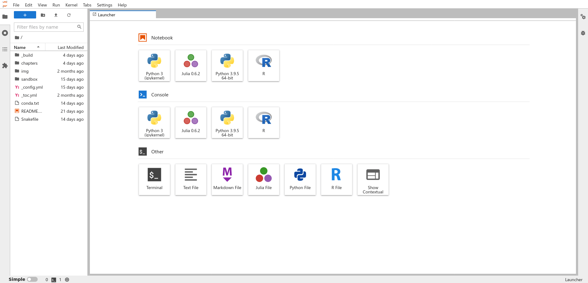
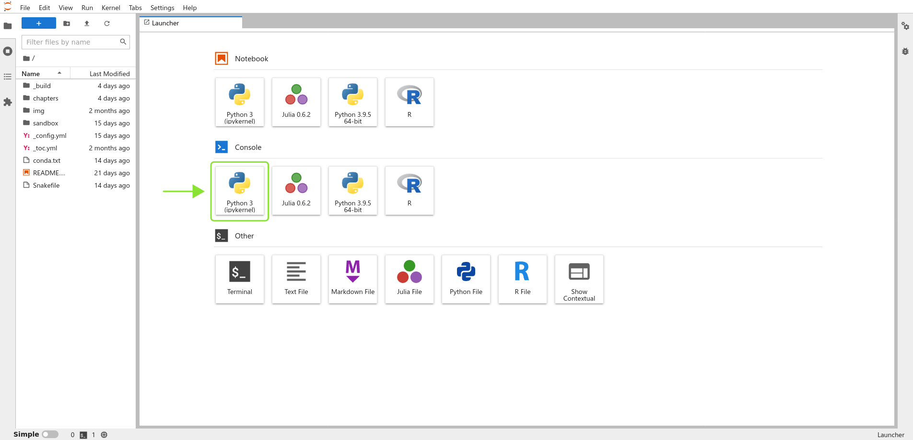
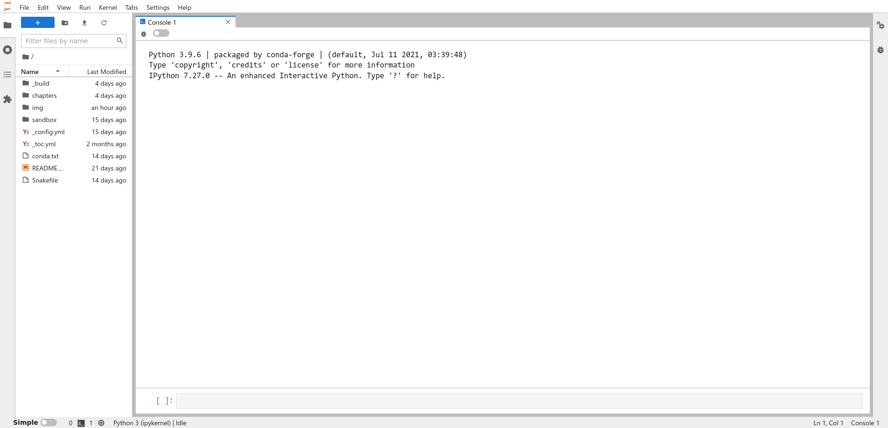
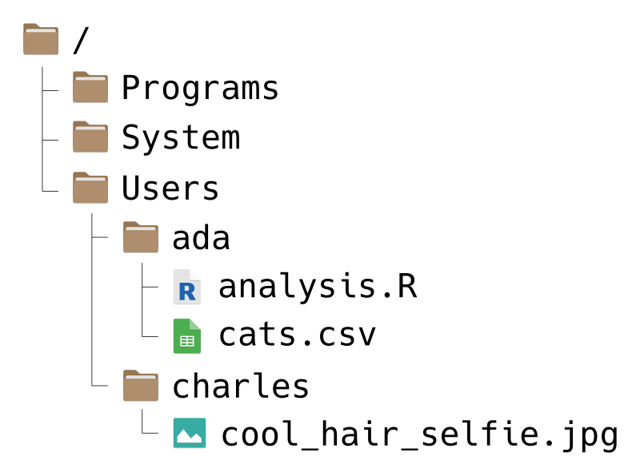
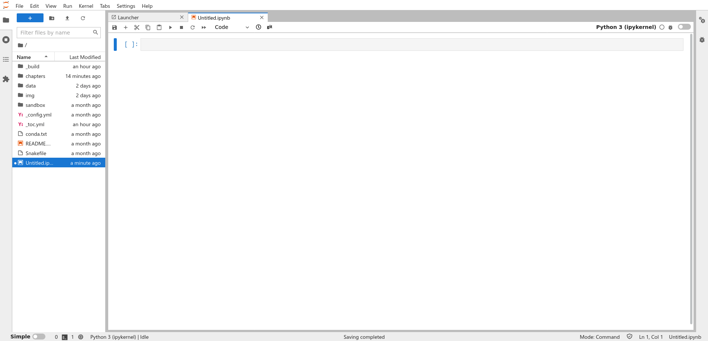
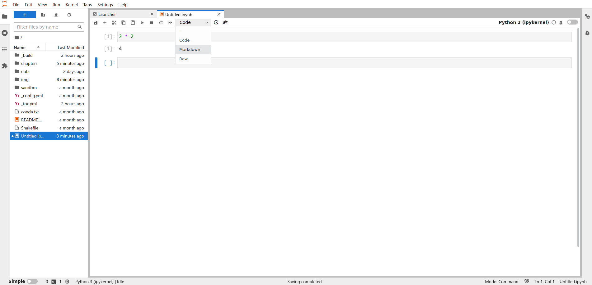

1. Getting Started#
Learning Objectives
Run code in a Python console (in JupyterLab)
Run and save code in a Jupyter notebook
Create variables and call functions
Write paths to files and directories
Get or set the Python working directory
Identify the format of a data file
Select appropriate functions for loading common file formats
Load a data set with Pandas and inspect its contents
Python is a popular general-purpose programming language. Python is also a leading language for scientific computing due to the SciPy ecosystem, a collection of scientific computing software for Python.
The main way you’ll interact with Python is by writing Python code or expressions. Most people use “Python” as a blanket term to refer to both the Python language and the Python software (which runs code written in the language). Usually, the distinction doesn’t matter, but it will be pointed out if it does.
Code you write is reproducible: you can share it with someone else, and if they run it with the same inputs, they’ll get the same results. By writing code, you create an unambiguous record of every step taken in your analysis. This is one of the major advantages of Python and other programming languages over point-and-click software like Tableau or Microsoft Excel.
Another advantage of writing code is that it’s often reusable. This means you can:
Automate repetitive tasks within an analysis
Recycle code from one analysis into another
Package useful code for distribution to your colleagues or the general public
At the time of writing, there were over 324,000 user-contributed packages available for Python, spanning a broad range of disciplines.
Python is one of many programming languages used in data science. Compared to other programming languages, Python’s particular strengths are its:
Interactivity
Use in a wide variety of disciplines, not just data science
Broad base of user-contributed packages
Easy-to-learn syntax that encourages good habits
1.1. Prerequisites#
Rather than installing Python directly, install the Anaconda Distribution, a collection of free and open-source data science software. The Anaconda Distribution includes several things you’ll need to follow along with this reader:
Python 3
SciPy ecosystem packages
JupyterLab, an editor for Python code
Conda, a program for installing and managing software
You’ll learn more about these later on. Anaconda also includes other popular software, such as the R programming language. Install Anaconda by following this guide.
1.2. The Python Console#
There are many different ways to edit and run Python code, but we’ll use JupyterLab, which is included in the Anaconda Distribution. JupyterLab is an integrated development environment (IDE), which means it’s a comprehensive program for writing, editing, searching, and running code. You can do all of these things without JupyterLab, but JupyterLab makes the process easier.
The first time you open JupyterLab, you’ll see a window that looks like this:
Don’t worry if the text in the panes isn’t exactly the same on your computer; it depends on your operating system and version of JupyterLab.
Start by opening up a Python console. In JupyterLab, look for the “Python 3” button in the “Console” section of the pane on the right. If there are multiple Python 3 buttons, click on the one that mentions “IPython” or “ipykernel”:
The console is a interactive, text-based interface to Python. If you enter a Python expression in the console, Python will compute and display the result. After you open the console, your window should look like this:
At the bottom of the console, the text box beginning with [ ]: is called the
prompt. The prompt is where you’ll type Python expressions. Ask Python to
compute the sum \(2 + 2\) by typing the code 2 + 2 in the prompt and then
pressing Shift-Enter. Your code and the result from Python should look like
this:
The Python console displays your code and the result on separate lines. Both
begin with the tag [1] to indicate that they are the first expression and
result. Python will increment the tag each time you run an expression. The tag
numbers will restart from 1 each time you open a new Python console.
Now try typing the code 3 - 1 in the prompt and pressing Shift-Enter:
The tag on the code and result is [2], and once again the result is displayed
after the tag.
Try out some other arithmetic in the Python console. Besides + for addition,
the other arithmetic operators are:
-for subtraction*for multiplication/for division%for remainder division (modulo)**for exponentiation
You can combine these and use parentheses ( ) to make more complicated
expressions, just as you would when writing a mathematical expression. When
Python computes a result, it follows the standard order of operations:
parentheses, exponentiation, multiplication, division, addition, and finally
subtraction.
For example, to compute the area of a triangle with base 3 and height 4, you can write:
0.5 * 3 * 4
6.0
You can write Python expressions with any number of spaces (including none) around the operators and Python will still compute the result. As with writing text, putting spaces in your code makes it easier for you and others to read, so it’s good to make it a habit. Put a single space on each side of most operators, after commas, and after keywords. Later on, you’ll learn about other kinds of expressions where the spacing does matter.
1.2.1. Variables#
Python and most other programming languages allow you to create named values
called variables. You can create a variable with the assignment operator
= by writing a name on the left-hand side and a value or expression on the
right hand side. For example, to save the estimated area of the triangle in a
variable called area, you can write:
area = 3 * 4 / 2
In Python, variable names can contain any combination of letters, numbers, and
underscores (_). Variables cannot start with a number; spaces, dots, and
other symbols are not allowed in variable names.
The main reason to use variables is to temporarily save results from
expressions so that you can use them in other expressions. For instance, now
you can use the area variable anywhere you want the area of the triangle.
Notice that when you assign a result to a variable, Python doesn’t automatically display that result. If you want to see the result as well, you have to enter the variable’s name as a separate expression:
area
6.0
Another reason to use variables is to make an expression clearer and more
general. For instance, you might want to compute the area of several triangles
with different bases and heights. Then the expression 3 * 4 / 2 is too
specific. Instead, you can create variables base and height, then rewrite
the expression as base * height / 2. This makes the expression easier to
understand, because the reader does not have to intuit that 3 and 4 are the
base and height in the formula. Here’s the new code to compute and display the
area of a triangle with base 3 and height 4:
base = 3
height = 4
area = base * height / 2
area
6.0
Now if you want to compute the area for a different triangle, all you have to
do is change base and height and run the code again (Python will not update
area until you do this). Writing code that’s general enough to reuse across
multiple problems can be a big time-saver in the long run. Later on, you’ll see
ways to make this code even easier to reuse.
1.2.2. Strings#
Python treats anything inside single or double quotes as literal text rather than as an expression to evaluate. In programming jargon, a piece of literal text is called a string. You can use whichever kind of quotes you prefer, but the quote at the beginning of the string must match the quote at the end.
'Hi'
'Hi'
"Hello!"
'Hello!'
Numbers and strings are not the same thing, so for example Python considers 1
different from "1".
1.2.3. Comparisons#
Besides arithmetic, you an also use Python to compare values. Programming tasks often involve comparing values. Use comparison operators to do so:
Symbol |
Meaning |
|---|---|
|
less than |
|
greater than |
|
less than or equal to |
|
greater than or equal to |
|
equal to |
|
not equal to |
Notice that the “equal to” operator is two equal signs. This is to distinguish
it from the assignment = operator.
Here are a few examples:
1.5 < 3
True
"a" > "b"
False
3 == 3.14
False
"hi" == "hi"
True
When you make a comparison, Python returns a Boolean value. There are only
two possible Boolean values: True and False. Booleans are commonly used for
expressions with yes-or-no responses.
Boolean values are values, so you can use them in other computations. For example:
True
True
True == False
False
1.2.4. Calling Functions#
Python can do a lot more than just arithmetic. Most of Python’s features are provided through functions, pieces of reusable code. You can think of a function as a machine that takes some inputs and uses them to produce some output. In programming jargon, the inputs to a function are called arguments, the output is called the return value, and using a function is called calling the function.
To call a function, write its name followed by parentheses. Put any arguments
to the function inside the parentheses. For example, the function to round a
number to a specified decimal place is named round. So you can round the
number 8.153 to the nearest integer with this code:
round(8.153)
8
Many functions accept more than one argument. For instance, the round function
accepts two arguments: the number to round, and the number of decimal places to
keep. When you call a function with multiple arguments, separate the arguments
with commas. So to round 8.153 to 1 decimal place:
round(8.153, 1)
8.2
When you call a function, Python assigns the arguments to the function’s
parameters. Parameters are special variables that represent the inputs to a
function and only exist while that function runs. For example, the round
function has parameters number and ndigits. The next section,
Section 1.3, explains how to look up the parameters for a function.
Some parameters have default arguments. A parameter is automatically
assigned its default argument whenever the parameter’s argument is not
specified explicitly. As a result, assigning arguments to these parameters is
optional. For instance, the ndigits parameter of round has a default
argument (round to the nearest integer), so it is okay to call round without
setting ndigits, as in round(8.153). In contrast, the numbers parameter
does not have a default argument. Section 1.3 explains how to look
up the default arguments for a function.
Python normally assigns arguments to parameters based on their position. The
first argument is assigned to the function’s first parameter, the second to the
second, and so on. So in the code above, 8.153 is assigned to number and
1 is assigned to ndigits.
You can make Python assign arguments to parameters by name with =, overriding
their positions. So two other ways you can write the call above are:
round(8.153, ndigits = 1)
8.2
round(number = 8.153, ndigits = 1)
8.2
round(ndigits = 1, number = 8.153)
8.2
All of these are equivalent. When you write code, choose whatever seems the clearest to you. Leaving parameter names out of calls saves typing, but including some or all of them can make the code easier to understand.
Parameters are not regular variables, and only exist while their associated function runs. You can’t set them before a call, nor can you access them after a call. So this code causes an error:
number = 4.755
round(ndigits = 2)
---------------------------------------------------------------------------
TypeError Traceback (most recent call last)
Cell In[19], line 2
1 number = 4.755
----> 2 round(ndigits = 2)
TypeError: round() missing required argument 'number' (pos 1)
In the error message, Python says that you forgot to assign an argument to the
parameter number. You can keep the variable number and correct the call by
making number an argument (for the parameter number):
round(number, ndigits = 2)
4.75
Or, written more explicitly:
round(number = number, ndigits = 2)
4.75
The point is that variables and parameters are distinct, even if they happen to
have the same name. The variable number is not the same thing as the
parameter number.
1.2.5. Objects & Attributes#
Python represents data as objects. Numbers, strings, data structures, and functions are all examples of objects.
An attribute is an object attached to another object. An attribute usually contains metadata about the object to which it is attached. An attribute can also be a function, in which case it is called a method.
For example, all strings have a capitalize method. You can access attributes
and methods by typing a . after an object. Here’s the code to capitalize a
string:
"snakes everywhere!".capitalize()
'Snakes everywhere!'
The built-in dir function lists all of the attributes attached to
an object. Here are the attributes for a string:
dir("hi")
['__add__',
'__class__',
'__contains__',
'__delattr__',
'__dir__',
'__doc__',
'__eq__',
'__format__',
'__ge__',
'__getattribute__',
'__getitem__',
'__getnewargs__',
'__getstate__',
'__gt__',
'__hash__',
'__init__',
'__init_subclass__',
'__iter__',
'__le__',
'__len__',
'__lt__',
'__mod__',
'__mul__',
'__ne__',
'__new__',
'__reduce__',
'__reduce_ex__',
'__repr__',
'__rmod__',
'__rmul__',
'__setattr__',
'__sizeof__',
'__str__',
'__subclasshook__',
'capitalize',
'casefold',
'center',
'count',
'encode',
'endswith',
'expandtabs',
'find',
'format',
'format_map',
'index',
'isalnum',
'isalpha',
'isascii',
'isdecimal',
'isdigit',
'isidentifier',
'islower',
'isnumeric',
'isprintable',
'isspace',
'istitle',
'isupper',
'join',
'ljust',
'lower',
'lstrip',
'maketrans',
'partition',
'removeprefix',
'removesuffix',
'replace',
'rfind',
'rindex',
'rjust',
'rpartition',
'rsplit',
'rstrip',
'split',
'splitlines',
'startswith',
'strip',
'swapcase',
'title',
'translate',
'upper',
'zfill']
Attributes that begin with two underscores __ are used by Python internally
and are usually not intended to be accessed directly.
1.3. Getting Help#
Learning and using a language is hard, so it’s important to know how to get
help. The first place to look for help is Python’s built-in documentation. In
the console, you can access the help pages with the help function.
There are help pages for all of Python’s built-in functions, usually with the
same name as the function itself. So the code to open the help page for the
round function is:
help(round)
Help on built-in function round in module builtins:
round(number, ndigits=None)
Round a number to a given precision in decimal digits.
The return value is an integer if ndigits is omitted or None. Otherwise
the return value has the same type as the number. ndigits may be negative.
For functions, help pages usually include a brief description and a list of
parameters and default arguments. For instance, the help page for round shows
that there are two parameters number and ndigits. It also says that
ndigits=None, meaning the default argument for ndigits is the special
None value, which you’ll learn more about on day 2.
There are also help pages for other topics, such as built-in operators and modules (you’ll learn more about modules in Section 1.4). To look up the help page for an operator, put the operator’s name in single or double quotes. For example, this code opens the help page for the arithmetic operators:
help("+")
Operator precedence
*******************
The following table summarizes the operator precedence in Python, from
highest precedence (most binding) to lowest precedence (least
binding). Operators in the same box have the same precedence. Unless
the syntax is explicitly given, operators are binary. Operators in
the same box group left to right (except for exponentiation and
conditional expressions, which group from right to left).
Note that comparisons, membership tests, and identity tests, all have
the same precedence and have a left-to-right chaining feature as
described in the Comparisons section.
+-------------------------------------------------+---------------------------------------+
| Operator | Description |
|=================================================|=======================================|
| "(expressions...)", "[expressions...]", "{key: | Binding or parenthesized expression, |
| value...}", "{expressions...}" | list display, dictionary display, set |
| | display |
+-------------------------------------------------+---------------------------------------+
| "x[index]", "x[index:index]", | Subscription, slicing, call, |
| "x(arguments...)", "x.attribute" | attribute reference |
+-------------------------------------------------+---------------------------------------+
| "await x" | Await expression |
+-------------------------------------------------+---------------------------------------+
| "**" | Exponentiation [5] |
+-------------------------------------------------+---------------------------------------+
| "+x", "-x", "~x" | Positive, negative, bitwise NOT |
+-------------------------------------------------+---------------------------------------+
| "*", "@", "/", "//", "%" | Multiplication, matrix |
| | multiplication, division, floor |
| | division, remainder [6] |
+-------------------------------------------------+---------------------------------------+
| "+", "-" | Addition and subtraction |
+-------------------------------------------------+---------------------------------------+
| "<<", ">>" | Shifts |
+-------------------------------------------------+---------------------------------------+
| "&" | Bitwise AND |
+-------------------------------------------------+---------------------------------------+
| "^" | Bitwise XOR |
+-------------------------------------------------+---------------------------------------+
| "|" | Bitwise OR |
+-------------------------------------------------+---------------------------------------+
| "in", "not in", "is", "is not", "<", "<=", ">", | Comparisons, including membership |
| ">=", "!=", "==" | tests and identity tests |
+-------------------------------------------------+---------------------------------------+
| "not x" | Boolean NOT |
+-------------------------------------------------+---------------------------------------+
| "and" | Boolean AND |
+-------------------------------------------------+---------------------------------------+
| "or" | Boolean OR |
+-------------------------------------------------+---------------------------------------+
| "if" – "else" | Conditional expression |
+-------------------------------------------------+---------------------------------------+
| "lambda" | Lambda expression |
+-------------------------------------------------+---------------------------------------+
| ":=" | Assignment expression |
+-------------------------------------------------+---------------------------------------+
-[ Footnotes ]-
[1] While "abs(x%y) < abs(y)" is true mathematically, for floats it
may not be true numerically due to roundoff. For example, and
assuming a platform on which a Python float is an IEEE 754 double-
precision number, in order that "-1e-100 % 1e100" have the same
sign as "1e100", the computed result is "-1e-100 + 1e100", which
is numerically exactly equal to "1e100". The function
"math.fmod()" returns a result whose sign matches the sign of the
first argument instead, and so returns "-1e-100" in this case.
Which approach is more appropriate depends on the application.
[2] If x is very close to an exact integer multiple of y, it’s
possible for "x//y" to be one larger than "(x-x%y)//y" due to
rounding. In such cases, Python returns the latter result, in
order to preserve that "divmod(x,y)[0] * y + x % y" be very close
to "x".
[3] The Unicode standard distinguishes between *code points* (e.g.
U+0041) and *abstract characters* (e.g. “LATIN CAPITAL LETTER A”).
While most abstract characters in Unicode are only represented
using one code point, there is a number of abstract characters
that can in addition be represented using a sequence of more than
one code point. For example, the abstract character “LATIN
CAPITAL LETTER C WITH CEDILLA” can be represented as a single
*precomposed character* at code position U+00C7, or as a sequence
of a *base character* at code position U+0043 (LATIN CAPITAL
LETTER C), followed by a *combining character* at code position
U+0327 (COMBINING CEDILLA).
The comparison operators on strings compare at the level of
Unicode code points. This may be counter-intuitive to humans. For
example, ""\u00C7" == "\u0043\u0327"" is "False", even though both
strings represent the same abstract character “LATIN CAPITAL
LETTER C WITH CEDILLA”.
To compare strings at the level of abstract characters (that is,
in a way intuitive to humans), use "unicodedata.normalize()".
[4] Due to automatic garbage-collection, free lists, and the dynamic
nature of descriptors, you may notice seemingly unusual behaviour
in certain uses of the "is" operator, like those involving
comparisons between instance methods, or constants. Check their
documentation for more info.
[5] The power operator "**" binds less tightly than an arithmetic or
bitwise unary operator on its right, that is, "2**-1" is "0.5".
[6] The "%" operator is also used for string formatting; the same
precedence applies.
Related help topics: lambda, or, and, not, in, is, BOOLEAN, COMPARISON,
BITWISE, SHIFTING, BINARY, FORMATTING, POWER, UNARY, ATTRIBUTES,
SUBSCRIPTS, SLICINGS, CALLS, TUPLES, LISTS, DICTIONARIES
It’s always okay to put quotes around the name of the page when you use help,
but they’re only required if the name contains non-alphabetic characters. So
help(abs), help('abs'), and help("abs") all open the documentation for
abs, the absolute value function.
You can also browse the Python documentation online. This is a good way to explore the many different functions and data structures built into Python. If you do use the online documentation, make sure to use the documentation for the same version of Python as the one you have. Python displays the version each time you open a new console, and the online documentation shows the version in the upper left corner.
Sometimes you might not know the name of the help page you want to look up. In that case it’s best to use an online search engine. When you search for help with Python online, include “Python” as a search term.
1.3.1. When Something Goes Wrong#
As a programmer, sooner or later you’ll run some code and get an error message or result you didn’t expect. Don’t panic! Even experienced programmers make mistakes regularly, so learning how to diagnose and fix problems is vital.
Try going through these steps:
If Python printed a warning or error message, read it! If you’re not sure what the message means, try searching for it online.
Check your code for typographical errors, including incorrect capitalization, whitespace, and missing or extra commas, quotes, and parentheses.
Test your code one line at a time, starting from the beginning. After each line that assigns a variable, check that the value of the variable is what you expect. Try to determine the exact line where the problem originates (which may differ from the line that emits an error!).
If none of these steps help, try asking online. Stack Overflow is a popular question and answer website for programmers. Before posting, make sure to read about how to ask a good question.
1.4. Packages#
A package is a reusable bundle of code. Packages usually include documentation, and can also contain examples and data sets. Most packages are developed by members of the Python community, so quality varies.
1.4.1. The SciPy Ecosystem#
The SciPy ecosystem is a collection of scientific computing software for Python introduced in 2001. SciPy is divided into several different Python packages.
Some of the most important packages in the SciPy ecosystem are:
NumPy, which provides an n-dimensional array data structure and a variety of math functions
SciPy, which provides additional math functions
Pandas, which provides DataFrames
IPython, which makes it possible to run Python code in Jupyter
Matplotlib, which provides data visualization functions
Note
All of these packages are included with Anaconda. Section 3.5 describes how to install other packages.
You’ll learn much more about NumPy, SciPy, and Pandas as you go through this reader. By using JupyterLab, you’ve already used IPython. You’ll use Matplotlib indirectly later on, when you learn about visualization.
1.4.2. Modules#
In Python, packages are further subdivided into modules, collections of related functions and data structures. The best way to learn about the modules provided by a package is to read the package’s documentation. There are also many modules that are built into Python, to provide extra features.
Most packages have a main module with the same name as the package. So the
NumPy package provides a module called numpy, and the Pandas package provides
a module called pandas. You can use the import command to load a module
from an installed package. Anaconda installs NumPy by default, so try loading
the numpy module:
import numpy
A handful of modules print out a message when loaded, but the vast majority do
not. Thus you can assume the import command was successful if nothing is
printed. If something goes wrong while loading a module, Python will print out
an error message explaining the problem.
Once a module is loaded, you can access its functions by typing the name of the
module, a dot ., and then the name of the function. For instance, to use the
round function provided by NumPy:
numpy.round(3.3)
np.float64(3.0)
Typing the full name of a module is inconvenient, so the import command
allows you to define an alias when you import a module. For popular packages,
there’s usually a conventional alias for the main module. The conventional
alias for numpy is np. Using the conventional alias is a good habit,
because it makes it easier for other people to understand your code. Use the
as keyword to set an alias when you import a module:
import numpy as np
Now you can call NumPy functions by typing np instead of numpy:
np.round(3.4)
np.float64(3.0)
Note that NumPy’s np.round is an entirely different function than Python’s
built-in round function, even though they do the same thing. NumPy’s math
functions are generally faster, more precise, and more convenient than Python’s
built-in math functions.
1.5. File Systems#
Most of the time, you won’t just write code directly into the Python console. Reproducibility and reusability are important benefits of Python over point-and-click software, and in order to realize these, you have to save your code to your computer’s hard drive.
This section begins with a review of how files on a computer work. You’ll need to understand that before you can save your code, and it will also be important later on for loading data sets.
Your computer’s file system consists of files (chunks of data) and directories (or “folders”) to organize those files. For instance, the file system on a computer shared by Ada and Charles, two pioneers of computing, might look like this:
{kind=link}
Don’t worry if your file system looks a bit different from the picture.
File systems have a tree-like structure, with a top-level directory called the
root directory. On Ada and Charles’ computer, the root is called /, which
is also what it’s called on all macOS and Linux computers. On Windows, the root
is usually called C:/, but sometimes other letters, like D:/, are also used
depending on the computer’s hardware.
A path is a list of directories that leads to a specific file or directory on
a file system (imagine giving directions to someone as they walk through the
file system). Use forward slashes / to separate the directories in a path,
rather than commas or spaces. The root directory includes a forward slash as
part of its name, and doesn’t need an extra one.
For example, suppose Ada wants to write a path to the file cats.csv. She can
write the path like this:
/Users/ada/cats.csv
You can read this path from left-to-right as, “Starting from the root
directory, go to the Users directory, then from there go to the ada
directory, and from there go to the file cats.csv.” Alternatively, you can
read the path from right-to-left as, “The file cats.csv inside of the ada
directory, which is inside of the Users directory, which is in the root
directory.”
As another example, suppose Charles wants a path to the Programs directory.
He can write:
/Programs/
The / at the end of this path is reminder that Programs is a directory, not
a file. Charles could also write the path like this:
/Programs
This is still correct, but it’s not as obvious that Programs is a directory.
In other words, when a path leads to a directory, including a trailing slash
is optional, but makes the meaning of the path clearer. Paths that lead to
files never have a trailing slash.
Warning
On Windows computers, the components of a path are usually separated with
backslashes \ instead of forward slashes /.
Regardless of the operating system, most Python functions accept and understand paths separated with forward slashes as arguments. In other words, you can use paths separated with forward slashes in your Python code, even on Windows. This is especially convenient when you want to share code with other people, because they might use a different operating system than you.
On Windows, most Python functions return paths separated by backslashes. Be
careful of this if your code gets a path by calling a function and then edits
it (for example, by calling os.getcwd and then splitting the path into its
components). The separator will be a backslash on Windows, but a forward slash
on all other operating systems. Python’s built-in pathlib module provides
helper functions to edit paths that account for differences between operating
systems.
1.5.1. Absolute & Relative Paths#
A path that starts from the root directory, like all of the ones we’ve seen so far, is called an absolute path. The path is “absolute” because it unambiguously describes where a file or directory is located. The downside is that absolute paths usually don’t work well if you share your code.
For example, suppose Ada uses the path /Programs/ada/cats.csv to load the
cats.csv file in her code. If she shares her code with another pioneer of
computing, say Gladys, who also has a copy of cats.csv, it might
not work. Even though Gladys has the file, she might not have it in a directory
called ada, and might not even have a directory called ada on her computer.
Because Ada used an absolute path, her code works on her own computer, but
isn’t portable to others.
On the other hand, a relative path is one that doesn’t start from the root directory. The path is “relative” to an unspecified starting point, which usually depends on the context.
For instance, suppose Ada’s code is saved in the file analysis.ipynb (more
about .ipynb files in Section 1.5.2.1), which is in the same
directory as cats.csv on her computer. Then instead of an absolute path, she
can use a relative path in her code:
cats.csv
The context is the location of analysis.ipynb, the file that contains the
code. In other words, the starting point on Ada’s computer is the ada
directory. On other computers, the starting point will be different, depending
on where the code is stored.
Now suppose Ada sends her corrected code in analysis.ipynb to Gladys, and
tells Gladys to put it in the same directory as cats.csv. Since the path
cats.csv is relative, the code will still work on Gladys’ computer, as long
as the two files are in the same directory. The name of that directory and its
location in the file system don’t matter, and don’t have to be the same as on
Ada’s computer. Gladys can put the files in a directory
/Users/gladys/from_ada/ and the path (and code) will still work.
Relative paths can include directories. For example, suppose that Charles wants
to write a relative path from the Users directory to a cool selfie he took.
Then he can write:
charles/cool_hair_selfie.jpg
You can read this path as, “Starting from wherever you are, go to the charles
directory, and from there go to the cool_hair_selfie.jpg file.” In other
words, the relative path depends on the context of the code or program that
uses it.
Tip
When use you paths in code, they should almost always be relative paths. This ensures that the code is portable to other computers, which is an important aspect of reproducibility. Another benefit is that relative paths tend to be shorter, making your code easier to read (and write).
When you write paths, there are three shortcuts you can use. These are most useful in relative paths, but also work in absolute paths:
.means the current directory...means the directory above the current directory.~means the home directory. Each user has their own home directory, whose location depends on the operating system and their username. Home directories are typically found insideC:/Users/on Windows,/Users/on macOS, and/home/on Linux.
As an example, suppose Ada wants to write a (relative) path from the ada
directory to Charles’ cool selfie. Using these shortcuts, she can write:
../charles/cool_hair_selfie.jpg
Read this as, “Starting from wherever you are, go up one directory, then go to
the charles directory, and then go to the cool_hair_selfie.jpg file.” Since
/Users/ada is Ada’s home directory, she could also write the path as:
~/../charles/cool_hair_selfie.jpg
This path has the same effect, but the meaning is slightly different. You can
read it as “Starting from your home directory, go up one directory, then go to
the charles directory, and then go to the cool_hair_selfie.jpg file.”
The .. and ~ shortcut are frequently used and worth remembering. The .
shortcut is included here in case you see it in someone else’s code. Since it
means the current directory, a path like ./cats.csv is identical to
cats.csv, and the latter is preferable for being simpler. There are a few
specific situations where . is necessary, but they fall outside the scope of
this text.
1.5.2. Saving Code#
Tip
When you start a new project, it’s a good idea to create a specific directory for all of the project’s files. If you’re using Python, you should also store your Python code in that directory. As you work, periodically save your code.
The most common way to save Python code is as a Python script with the
extension .py (see Section 1.6 for more about extensions).
Editing a script is similar to editing any other text document. You can write,
delete, copy, cut, and paste code.
You can create a new Python script in JupyterLab with this menu option:
File -> New -> Python File
Every line in a Python script must be valid Python code. Anything else you want
to write in the script (notes, documentation, etc.) must be placed in a
comment. In Python, comments begin with # and extend to the end of the
line:
# This is a comment.
Python will ignore comments when you run your code.
Arrange your code in the order of the steps to solve the problem, even if you write some parts before others. Comment out or delete any lines of code that you try but ultimately decide you don’t need. Make sure to save the file periodically so that you don’t lose your work. Following these guidelines will help you stay organized and make it easier to share your code with others later.
1.5.2.1. Jupyter Notebooks#
For data science tasks, it is also common to use a Jupyter
notebook with extension .ipynb to store code. In addition to
Python code, Jupyter notebooks have full support for formatted text, images,
and code from other programming languages such as Julia and R. The tradeoff is
that Jupyter notebooks can only be viewed in a web browser.
Tip
“Jupyter” is short for “Julia, Python, Text, and R.”
Jupyter notebooks are more convenient than Python scripts for interactive work such as data analysis and learning or experimenting with the language. On the other hand, Python scripts are more appropriate for long-running code that does not require user interaction (such as web scrapers or scientific simulations) and for developing packages and software. The remainder of this reader assumes you’re using a Jupyter notebook rather than the Python console or a Python script, unless otherwise noted.
You can create a new Jupyter notebook in JupyterLab with this menu option:
File -> New -> Notebook
JupyterLab will prompt you to select a kernel for the notebook. The kernel is the software used to run code in the notebook. For a notebook that will contain Python code, you should choose a Python kernel.
After you select the kernel, you’ll see a pane like this:
Jupyter notebooks are subdivided into cells. You can create as many cells as you like, but each cell can only contain one kind of content, usually code or text.
New cells are code cells by default. You can run a code cell by clicking on the
cell and pressing Shift-Enter. The notebook will display the result and
create a new empty code cell below the result:
You can convert a code cell to a text cell by clicking on the cell and selecting the “Markdown” option from the cell type dropdown menu:
Markdown is a simple language you can use to add formatting to your text. For
example, surrounding a word with asterisks, as in Let *sleeping* dogs lie,
makes the surrounded word italic. You can find a short, interactive tutorial
about Markdown here. If you “run” a text cell by pressing
Shift-Enter, the notebook will display the text with any formatting you
added.
1.5.3. The Working Directory#
Section 1.5.1 explained that relative paths have a starting point that depends on the context where the path is used. The working directory is the starting point Python uses for relative paths. Think of the working directory as the directory Python is currently “at” or watching.
Python’s built-in os module provides functions to manipulate the working
directory. The function os.getcwd returns the absolute path for the current
working directory, as a string. It doesn’t require any arguments:
import os
os.getcwd()
'/Users/elisehellwig/Teaching/workshop_python_basics'
On your computer, the output from os.getcwd will likely be different. This is
a very useful function for getting your bearings when you write relative paths.
If you write a relative path and it doesn’t work as expected, the first thing
to do is check the working directory.
The related os.chdir function changes the working directory. It takes one
argument: a path to the new working directory. Here’s an example:
os.chdir("..")
# Now check the working directory.
os.getcwd()
'/Users/elisehellwig/Teaching'
Generally, you should avoid using calls to os.chdir in your Jupyter notebooks
and Python scripts. Calling os.chdir makes your code more difficult to
understand, and can always be avoided by using appropriate relative paths. If
you call os.chdir with an absolute path, it also makes your code less
portable to other computers. It’s fine to use os.chdir interactively (in the
Python console), but avoid making your saved code dependent on it.
Another function that’s useful for dealing with the working directory and file
system is os.listdir. The os.listdir function returns the names of all of
the files and directories inside of a directory. It accepts a path to a
directory as an argument, or assumes the working directory if you don’t pass a
path. For instance:
# List files and directories in /home/.
os.listdir("/home/")
# List files and directories in the working directory.
os.listdir()
['python_basics',
'template_quarto_presentation',
'.DS_Store',
'files_in_r',
'ist8x_instructors',
'workshop_intro_to_databases',
'workshop_intro_to_sql',
'workshop_python_basics',
'issue_test',
'ist8x',
'adventures_in_data_science',
'REC_LETTERS',
'DRUG',
'template_workshop']
As usual, since you have a different computer, you’re likely to see different
output if you run this code. If you call os.listdir with an invalid path or
an empty directory, Python raises a FileNotFoundError:
os.listdir("/this/path/is/fake/")
---------------------------------------------------------------------------
FileNotFoundError Traceback (most recent call last)
Cell In[35], line 1
----> 1 os.listdir("/this/path/is/fake/")
FileNotFoundError: [Errno 2] No such file or directory: '/this/path/is/fake/'
1.6. Reading Files#
The first step in most data analyses is loading the data. The Pandas package provides functions to read a variety of data formats. In order to know which function to use, you need to identify the data’s file format.
Most of the time, you can guess the format of a file by looking at its
extension, the characters (usually three) after the last dot . in the
filename. For example, the extension .jpg or .jpeg indicates a JPEG image
file. Some operating systems hide extensions by default, but you can find
instructions to change this setting online by searching for “show file
extensions” and your operating system’s name. The extension is just part of the
file’s name, so it should be taken as a hint about the file’s format rather
than a guarantee.
The table below shows several formats that are frequently used to distribute data. Although Pandas provides reader functions for all of these, the lxml package and Python’s built-in json module are better suited to the last two.
Name |
Extension |
Tabular? |
Text? |
Pandas Function |
|---|---|---|---|---|
Comma-separated Values |
|
Yes |
Yes |
|
Tab-separated Values |
|
Yes |
Yes |
|
Fixed-width File |
|
Yes |
Yes |
|
Microsoft Excel |
|
Yes |
No |
|
|
Yes |
No |
|
|
Extensible Markup Language |
|
No |
Yes |
Use lxml package |
JavaScript Object Notation |
|
No |
Yes |
Use json module |
Arbitrary File |
Use io module |
A tabular data set is one that’s structured as a table, with rows and columns. We’ll focus on tabular data sets for most of this reader, since they’re easier to get started with. Here’s an example of a tabular data set:
Fruit |
Quantity |
Price |
|---|---|---|
apple |
32 |
1.49 |
banana |
541 |
0.79 |
pear |
10 |
1.99 |
A text file is one that contains human-readable lines of text. You can check this by opening the file with a text editor such as Microsoft Notepad or macOS TextEdit. Many file formats use text in order to make the format easier to work with.
For instance, a comma-separated values (CSV) file records a tabular data using one line per row, with commas separating columns. If you store the table above in a CSV file and open the file in a text editor, here’s what you’ll see:
Fruit,Quantity,Price
apple,32,1.49
banana,541,0.79
pear,10,1.99
A binary file is one that’s not human-readable. You can’t just read off the data if you open a binary file in a text editor, but they have a number of other advantages. Compared to text files, binary files are often faster to read and take up less storage space (bytes).
1.6.1. Hello, Data!#
Over the next few sections, you’ll explore data about banknotes and the people depicted on them. This data is derived from a data set compiled by The Pudding, which features an article about it. To download the version you’ll need for this workshop, click here (you’ll need to click the “Download raw file” button).
The data set is a file called banknotes.csv, which suggests it’s a CSV file.
In this case, the extension is correct, so you can read the file with Pandas’
read_csv function. The first argument is the path to where you saved the
file, which may be different on your computer. The read_csv function returns
the data set, but Python won’t keep the data in memory unless you assign the
returned result to a variable:
import pandas as pd
banknotes = pd.read_csv("data/banknotes.csv")
banknotes
| currency_code | country | currency_name | name | gender | bill_count | profession | known_for_being_first | current_bill_value | prop_total_bills | first_appearance_year | death_year | comments | hover_text | has_portrait | id | scaled_bill_value | |
|---|---|---|---|---|---|---|---|---|---|---|---|---|---|---|---|---|---|
| 0 | ARS | Argentina | Argentinian Peso | Eva Perón | F | 1.0 | Activist | No | 100 | NaN | 2012 | 1952 | NaN | NaN | True | ARS_Evita | 1.000000 |
| 1 | ARS | Argentina | Argentinian Peso | Julio Argentino Roca | M | 1.0 | Head of Gov't | No | 100 | NaN | 1988 | 1914 | NaN | NaN | True | ARS_Argentino | 1.000000 |
| 2 | ARS | Argentina | Argentinian Peso | Domingo Faustino Sarmiento | M | 1.0 | Head of Gov't | No | 50 | NaN | 1999 | 1888 | NaN | NaN | True | ARS_Domingo | 0.444444 |
| 3 | ARS | Argentina | Argentinian Peso | Juan Manuel de Rosas | M | 1.0 | Politician | No | 20 | NaN | 1992 | 1877 | NaN | NaN | True | ARS_Rosas | 0.111111 |
| 4 | ARS | Argentina | Argentinian Peso | Manuel Belgrano | M | 1.0 | Founder | Yes | 10 | NaN | 1970 | 1820 | Came up with the first Argentine flag. | Designed first Argentine flag | True | ARS_Belgrano | 0.000000 |
| ... | ... | ... | ... | ... | ... | ... | ... | ... | ... | ... | ... | ... | ... | ... | ... | ... | ... |
| 274 | ZAR | South Africa | rand | Nelson Mandela | M | 1.0 | Head of Gov't | Yes | 10 | NaN | 2012 | 2013 | 1st black state leader and 1st president of So... | First Black state leader and first President o... | True | ZAR_Mandela | 0.000000 |
| 275 | ZAR | South Africa | rand | Nelson Mandela | M | 1.0 | Head of Gov't | Yes | 20 | NaN | 2012 | 2013 | 1st black state leader and 1st president of So... | First Black state leader and first President o... | True | ZAR_Mandela | 0.052632 |
| 276 | ZAR | South Africa | rand | Nelson Mandela | M | 1.0 | Head of Gov't | Yes | 50 | NaN | 2012 | 2013 | 1st black state leader and 1st president of So... | First Black state leader and first President o... | True | ZAR_Mandela | 0.210526 |
| 277 | ZAR | South Africa | rand | Nelson Mandela | M | 1.0 | Head of Gov't | Yes | 100 | NaN | 2012 | 2013 | 1st black state leader and 1st president of So... | First Black state leader and first President o... | True | ZAR_Mandela | 0.473684 |
| 278 | ZAR | South Africa | rand | Nelson Mandela | M | 1.0 | Head of Gov't | Yes | 200 | NaN | 2012 | 2013 | 1st black state leader and 1st president of So... | First Black state leader and first President o... | True | ZAR_Mandela | 1.000000 |
279 rows × 17 columns
The variable name banknotes here is arbitrary; you can choose something
different if you want. However, in general, it’s a good habit to choose
variable names that describe the contents of the variable somehow.
If you tried running the line of code above and got an error message, pay attention to what the error message says, and remember the strategies to get help in Section 1.3. The most common mistake when reading a file is incorrectly specifying the path, so first check that you got the path right.
If you ran the line of code, there was no error message, and you can see a table of data, then congratulations, you’ve read your first data set into Python!
1.7. Inspecting a DataFrame#
Now that you’ve loaded the data, you can take a look at it. When working with a new data set, it often isn’t a good idea to print the whole thing to screen, at least until you know how big it is. Large data sets can take a long time to print, and the output can be difficult to read.
Instead, use the Pandas .head method to print only the beginning, or head, of
the data.
banknotes.head()
| currency_code | country | currency_name | name | gender | bill_count | profession | known_for_being_first | current_bill_value | prop_total_bills | first_appearance_year | death_year | comments | hover_text | has_portrait | id | scaled_bill_value | |
|---|---|---|---|---|---|---|---|---|---|---|---|---|---|---|---|---|---|
| 0 | ARS | Argentina | Argentinian Peso | Eva Perón | F | 1.0 | Activist | No | 100 | NaN | 2012 | 1952 | NaN | NaN | True | ARS_Evita | 1.000000 |
| 1 | ARS | Argentina | Argentinian Peso | Julio Argentino Roca | M | 1.0 | Head of Gov't | No | 100 | NaN | 1988 | 1914 | NaN | NaN | True | ARS_Argentino | 1.000000 |
| 2 | ARS | Argentina | Argentinian Peso | Domingo Faustino Sarmiento | M | 1.0 | Head of Gov't | No | 50 | NaN | 1999 | 1888 | NaN | NaN | True | ARS_Domingo | 0.444444 |
| 3 | ARS | Argentina | Argentinian Peso | Juan Manuel de Rosas | M | 1.0 | Politician | No | 20 | NaN | 1992 | 1877 | NaN | NaN | True | ARS_Rosas | 0.111111 |
| 4 | ARS | Argentina | Argentinian Peso | Manuel Belgrano | M | 1.0 | Founder | Yes | 10 | NaN | 1970 | 1820 | Came up with the first Argentine flag. | Designed first Argentine flag | True | ARS_Belgrano | 0.000000 |
This data is tabular, as you might have already guessed, since it came from a CSV file. Pandas represents it as a DataFrame: data structured as rows and columns. In general rows are observations and columns are variables. Each entry is called a cell.
You can check to make sure Pandas has indeed created a DataFrame with the
type function, which is discussed in more detail in Section 2.3:
type(banknotes)
pandas.core.frame.DataFrame
Everything looks good here. To see the bottom of this data, use tail:
banknotes.tail()
| currency_code | country | currency_name | name | gender | bill_count | profession | known_for_being_first | current_bill_value | prop_total_bills | first_appearance_year | death_year | comments | hover_text | has_portrait | id | scaled_bill_value | |
|---|---|---|---|---|---|---|---|---|---|---|---|---|---|---|---|---|---|
| 274 | ZAR | South Africa | rand | Nelson Mandela | M | 1.0 | Head of Gov't | Yes | 10 | NaN | 2012 | 2013 | 1st black state leader and 1st president of So... | First Black state leader and first President o... | True | ZAR_Mandela | 0.000000 |
| 275 | ZAR | South Africa | rand | Nelson Mandela | M | 1.0 | Head of Gov't | Yes | 20 | NaN | 2012 | 2013 | 1st black state leader and 1st president of So... | First Black state leader and first President o... | True | ZAR_Mandela | 0.052632 |
| 276 | ZAR | South Africa | rand | Nelson Mandela | M | 1.0 | Head of Gov't | Yes | 50 | NaN | 2012 | 2013 | 1st black state leader and 1st president of So... | First Black state leader and first President o... | True | ZAR_Mandela | 0.210526 |
| 277 | ZAR | South Africa | rand | Nelson Mandela | M | 1.0 | Head of Gov't | Yes | 100 | NaN | 2012 | 2013 | 1st black state leader and 1st president of So... | First Black state leader and first President o... | True | ZAR_Mandela | 0.473684 |
| 278 | ZAR | South Africa | rand | Nelson Mandela | M | 1.0 | Head of Gov't | Yes | 200 | NaN | 2012 | 2013 | 1st black state leader and 1st president of So... | First Black state leader and first President o... | True | ZAR_Mandela | 1.000000 |
Both head and tail accept an optional argument that specifies the number of
rows to print to screen:
banknotes.head(10)
| currency_code | country | currency_name | name | gender | bill_count | profession | known_for_being_first | current_bill_value | prop_total_bills | first_appearance_year | death_year | comments | hover_text | has_portrait | id | scaled_bill_value | |
|---|---|---|---|---|---|---|---|---|---|---|---|---|---|---|---|---|---|
| 0 | ARS | Argentina | Argentinian Peso | Eva Perón | F | 1.0 | Activist | No | 100 | NaN | 2012 | 1952 | NaN | NaN | True | ARS_Evita | 1.000000 |
| 1 | ARS | Argentina | Argentinian Peso | Julio Argentino Roca | M | 1.0 | Head of Gov't | No | 100 | NaN | 1988 | 1914 | NaN | NaN | True | ARS_Argentino | 1.000000 |
| 2 | ARS | Argentina | Argentinian Peso | Domingo Faustino Sarmiento | M | 1.0 | Head of Gov't | No | 50 | NaN | 1999 | 1888 | NaN | NaN | True | ARS_Domingo | 0.444444 |
| 3 | ARS | Argentina | Argentinian Peso | Juan Manuel de Rosas | M | 1.0 | Politician | No | 20 | NaN | 1992 | 1877 | NaN | NaN | True | ARS_Rosas | 0.111111 |
| 4 | ARS | Argentina | Argentinian Peso | Manuel Belgrano | M | 1.0 | Founder | Yes | 10 | NaN | 1970 | 1820 | Came up with the first Argentine flag. | Designed first Argentine flag | True | ARS_Belgrano | 0.000000 |
| 5 | AUD | Australia | Australian Dollar | David Unaipon | M | 0.5 | STEM | Yes | 50 | 0.48 | 1995 | 1967 | Shares with another person. In 1927 when his b... | First Australian Aboriginal writer to be publi... | True | AUD_Unaipon | 0.473684 |
| 6 | AUD | Australia | Australian Dollar | Mary Gilmore | F | 0.5 | Writer | Yes | 10 | 0.08 | 1993 | 1962 | Shares with another person. She became the fir... | First person appointed Dame Commander of the B... | True | AUD_Gilmore | 0.052632 |
| 7 | AUD | Australia | Australian Dollar | Reverend John Flynn | M | 0.5 | Religious figure | Yes | 20 | 0.10 | 1994 | 1951 | Shares with another person. Founded Royal Flyi... | Founded Royal Flying Doctor Service, the world... | True | AUD_Flynn | 0.157895 |
| 8 | AUD | Australia | Australian Dollar | Banjo Paterson | M | 0.5 | Writer | No | 10 | 0.08 | 1993 | 1941 | Shares with another person | NaN | True | AUD_Banjo | 0.052632 |
| 9 | AUD | Australia | Australian Dollar | Edith Cowan | F | 0.5 | Politician | Yes | 50 | 0.48 | 1995 | 1932 | Shares with another person. She is best known ... | First Australian woman to serve as a member of... | True | AUD_Edith | 0.473684 |
If there are many columns in your DataFrame, as is the case here, Pandas will
often squeeze the output into a condensed display, with ... representing
additional columns.
One way to get a quick idea of what your data looks like without having to
shuffle through all the columns and rows is by inspecting its shape. This
is the number of rows and columns in a DataFrame, and you can access this
information with the .shape attribute:
banknotes.shape
(279, 17)
Note
Notice how you accessed this DataFrame’s .shape attribute using a very
similar syntax to the way you called one of its methods. The key difference is
the parentheses () at the end. Parentheses are necesary when you want to call
a method, but not when you want just want to access the value of attribute.
To display the names of each column, access the .columns attribute:
banknotes.columns
Index(['currency_code', 'country', 'currency_name', 'name', 'gender',
'bill_count', 'profession', 'known_for_being_first',
'current_bill_value', 'prop_total_bills', 'first_appearance_year',
'death_year', 'comments', 'hover_text', 'has_portrait', 'id',
'scaled_bill_value'],
dtype='object')
1.7.1. Summarizing Data#
More granular information about a DataFrame and its contents is available with
the .info method. In addition to attributes like the DataFrame’s shape and
its column names, .info provides a brief summary of the number of cells that
contain data, the type of data in each cell, and the total memory usage of the
DataFrame:
banknotes.info()
<class 'pandas.core.frame.DataFrame'>
RangeIndex: 279 entries, 0 to 278
Data columns (total 17 columns):
# Column Non-Null Count Dtype
--- ------ -------------- -----
0 currency_code 279 non-null object
1 country 279 non-null object
2 currency_name 279 non-null object
3 name 279 non-null object
4 gender 279 non-null object
5 bill_count 279 non-null float64
6 profession 279 non-null object
7 known_for_being_first 279 non-null object
8 current_bill_value 279 non-null int64
9 prop_total_bills 59 non-null float64
10 first_appearance_year 279 non-null int64
11 death_year 272 non-null object
12 comments 119 non-null object
13 hover_text 89 non-null object
14 has_portrait 279 non-null bool
15 id 279 non-null object
16 scaled_bill_value 278 non-null float64
dtypes: bool(1), float64(3), int64(2), object(11)
memory usage: 35.3+ KB
The next chapter discusses data types in more detail. For now, just take note
that there are multiple types (bool, float64, int64, and object in
banknotes).
In contrast to .info, the .describe method provides summary statistics
about a DataFrame. The latter will only return information about numeric
columns:
banknotes.describe()
| bill_count | current_bill_value | prop_total_bills | first_appearance_year | scaled_bill_value | |
|---|---|---|---|---|---|
| count | 279.000000 | 279.000000 | 59.000000 | 279.000000 | 278.000000 |
| mean | 0.845556 | 4038.956989 | 0.166949 | 1992.318996 | 0.306058 |
| std | 0.259463 | 14336.386917 | 0.163573 | 25.369968 | 0.364860 |
| min | 0.250000 | 1.000000 | 0.010000 | 1869.000000 | 0.000000 |
| 25% | 0.500000 | 20.000000 | 0.055000 | 1980.000000 | 0.018282 |
| 50% | 1.000000 | 100.000000 | 0.100000 | 1996.000000 | 0.111111 |
| 75% | 1.000000 | 1000.000000 | 0.230000 | 2012.000000 | 0.489142 |
| max | 1.000000 | 100000.000000 | 0.750000 | 2021.000000 | 1.000000 |
1.7.2. Selecting Columns#
Individual columns may be selected with bracket notation. Put the name of
the column in quotes and place that inside of square brackets []:
banknotes["current_bill_value"]
0 100
1 100
2 50
3 20
4 10
...
274 10
275 20
276 50
277 100
278 200
Name: current_bill_value, Length: 279, dtype: int64
Just as with .describe, you can compute information about a column using
Pandas methods. Here is the mean:
banknotes["current_bill_value"].mean()
np.float64(4038.956989247312)
And here is the smallest value in the column:
banknotes["current_bill_value"].min()
np.int64(1)
Functions from other libraries, especially those in the SciPy ecosystem, can
also (but not always) work with Pandas. Here is the largest value in the
column, computed with NumPy’s max:
np.max(banknotes["current_bill_value"])
np.int64(100000)
It’s often helpful to count cells by collecting them into groups first.
Section 3.3 will cover this in detail, but you can use the
.value_counts method right out of the box:
banknotes["currency_code"].value_counts()
currency_code
BOB 15
IDR 12
TRY 12
MXN 11
COP 11
DOP 11
UAH 10
GEL 9
RSD 9
NGN 9
AUD 9
PHP 9
CAD 9
BDT 9
GBP 8
STD 8
USD 7
UYU 7
KGS 7
MWK 7
PEN 7
RMB 6
CZK 6
CRC 6
VES 6
SEK 6
ARS 5
ZAR 5
NZD 5
JMD 5
ISK 5
CVE 5
CLP 5
TND 4
ILS 4
KRW 4
JPY 3
VES 2
PGK 1
Name: count, dtype: int64
Finally, you can assign new values to a DataFrame using the same notation as
above. Below, this code overwrites all the values in the currency_code
column:
banknotes["currency_code"] = "USD"
banknotes["currency_code"]
0 USD
1 USD
2 USD
3 USD
4 USD
...
274 USD
275 USD
276 USD
277 USD
278 USD
Name: currency_code, Length: 279, dtype: object
The next chapter will return to working with columns, showing you how to generate new data from a DataFrame. You’ll also learn how to select rows and subsets of the data, as well as groups of columns.
1.8. Exercises#
1.8.1. Exercise#
In a string, an escape sequence or escape code consists of a backslash
\ followed by one or more characters. Escape characters make it possible to:
Write quotes or backslashes in a string
Use spaces in file paths
Write characters that don’t appear on your keyboard (for example characters in a different script system)
For example, the escape sequence \n means “newline character.” A full list of
these sequences is available at W3Schools.
Assign a string that contains a newline to the variable
newline. Then displaynewlinevia the Python console.The
printfunction renders output in a properly formatted manner. Use this function to printnewline.How does the output between these two displays differ? Why do you think this is?
1.8.2. Exercise#
Chose a directory on your computer that you’re familiar with, such as your current working directory. Determine the path to the directory, then use
os.listdirto display its contents. Do the files displayed match what you see in your systems file browser?Send a path to
os.path.existsand inspect its output. What does this function do? See if you can change its output. If you can, why did it change?
1.8.3. Exercise#
Open the help file for the Pandas
read_csvfunction. Thesepparameter controls which characters Pandas looks for when determining the columns in a file. What is the default character?A TSV file is similar to CSV files, except it uses tabs to delimit columns. Tabs are represented by escape sequences in Python. Find the right sequence and explain how you would load a TSV file with
read_csv.Reload the
banknotesdata, but this time specify\sfor thesepparameter.\srepresents a space. When you load the data using this sequence, what happens? Why?